From the onset, this project had two goals, one personal and one practical. My personal was to dissect and understand the design process from beginning to end to be able to conceptualize and present a materialized product. The practical aim of the project was to create a platform for multiple users to share multiple types of media in order to collaborate on a project.
I was brought on board the team to become acquainted with project development by creating a simple way for teams to collaborate on projects in a digital space. The goal was to learn the ins and outs of design and working with a team to accomplish a goal while also building a space for others to do the same. Living in a digital world, it’s increasingly difficult to work as a team on projects if you don’t have a digital space to store all your media files and share them so they can be accessed from anywhere.
My solution was to conduct a SWOT analyses of my competitors (Google Drive, Evernote, and SimpleNote) and then figure out a branding strategy that would appeal to my users. I conducted surveys to discover who my primary users were and what was important to them. With my limited experience, my solution was to listen to the industry experts, websites that were working, and my users to figure out how to structure the website. I then conducted several interviews and created personas to help guide me in my design process.
Swot of EverNote
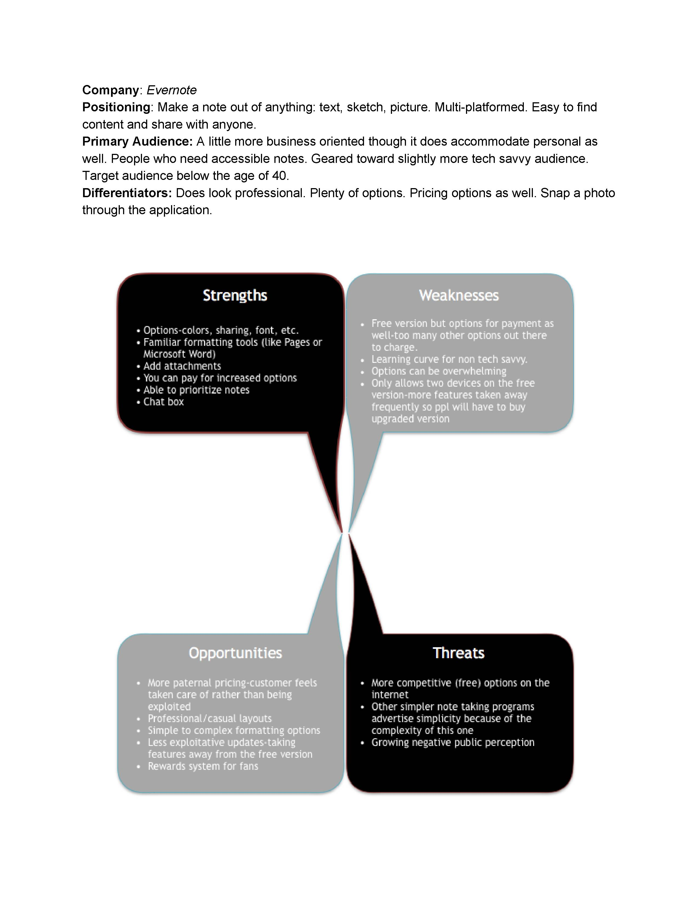Persona 1

Persona 2
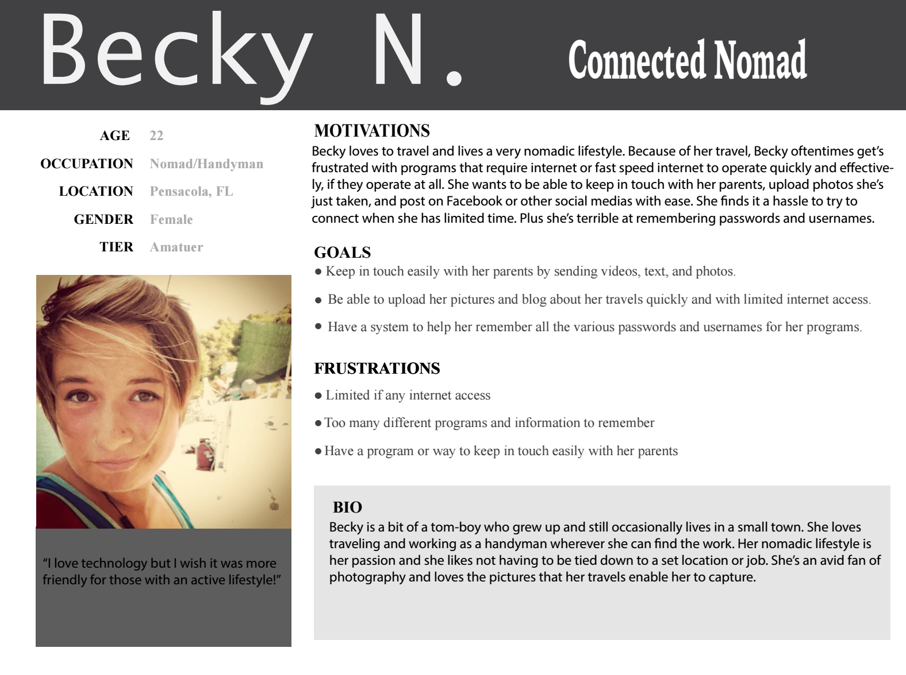With the audience defined, I came up with a lot of intricate and detailed logo designs but quickly learned it was too taxing on the eyes because of complicated visuals. This weakened the brand identity. In addition to that I learned the importance of keeping it simple for the sake of scalability. Logos need to fit on multiple surfaces so they have to be able to scale down and up with ease. I also needed to eliminate all the colors except black and white so it could be viewed on multiple colored surfaces. User feedback and industry experts helped me to understand the importance of these concepts when designing logos.
Brainstorming
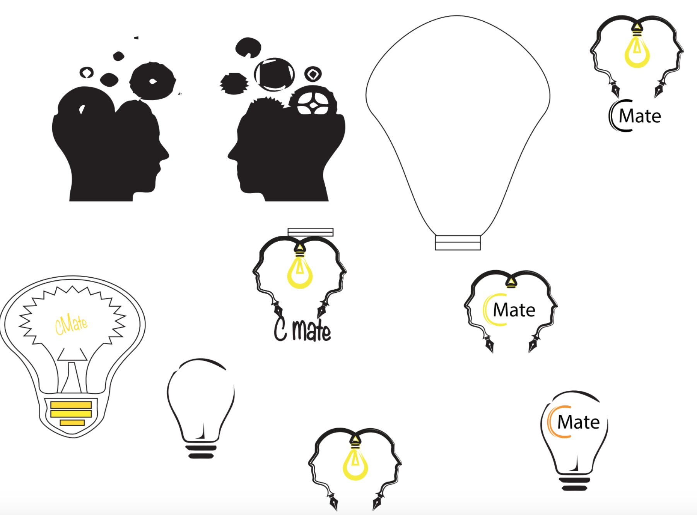More Brainstorming
Chosen Logo
With a user-first model I needed to get into the mind of my users to see how colors communicate meaning to them. Knowing this information would help me to choose a color palette that would allow users to feel comfortable using my site. I started with bright colors but quickly discovered they didn’t provide me with the professional feeling I was going for so I ended up with darker blues.
User Feedback: Colors Too Bright

User Feedback: Not Professional

Final Draft

It was time to develop the site. My methodology was to begin with user stories to define the expectations of my users, followed by diagrams of the pages the user would expect to find certain info. With this blue print defined, I then developed low fidelity mockups to begin the visualization of each page. Once I was satisfied with the layout, I tested and adjusted the layout. Finally, I developed high fidelity mockups of the site.
Sign Up Flow
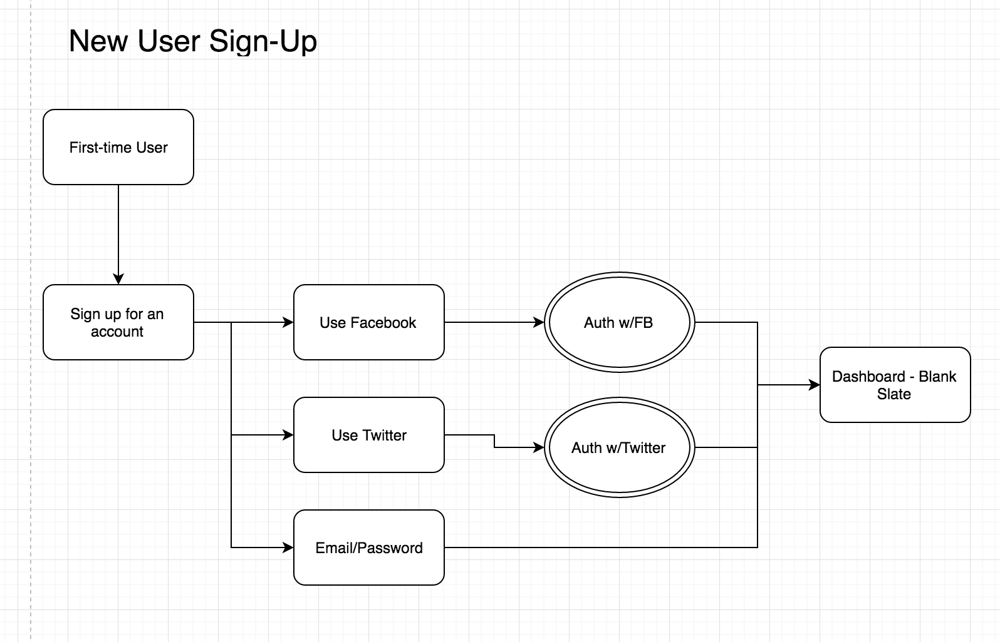Sign Up 1st Draft
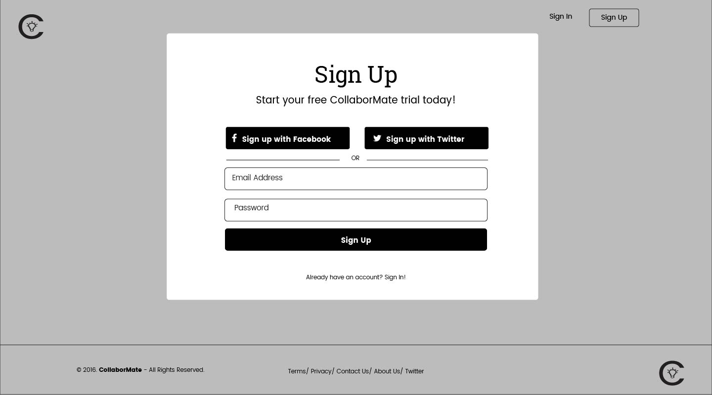Sign Up Final Draft
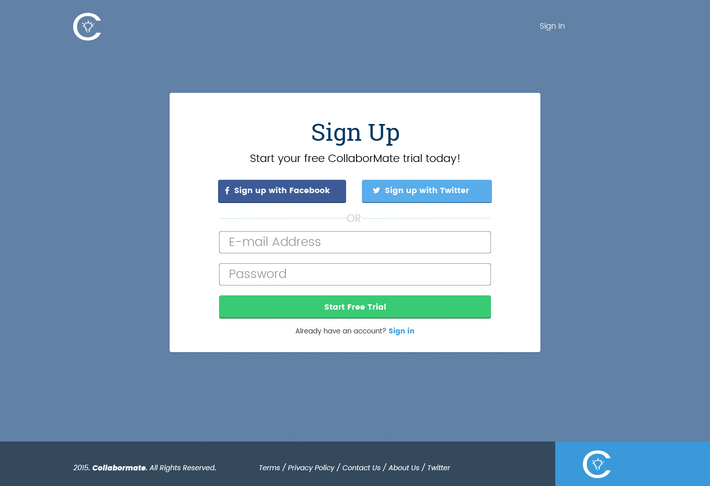Home Page Flow

Low Fidelity of Home Page
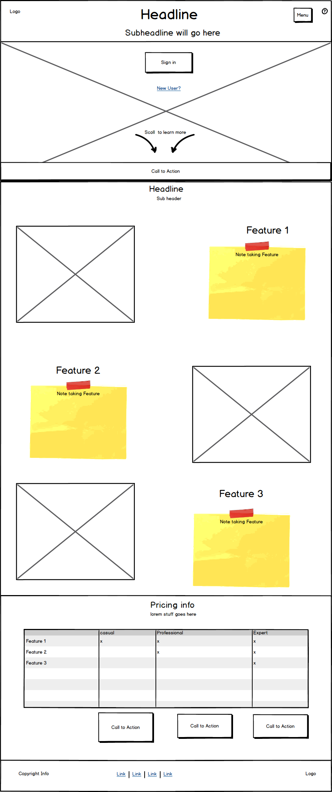1st High Fidelity of Home Page
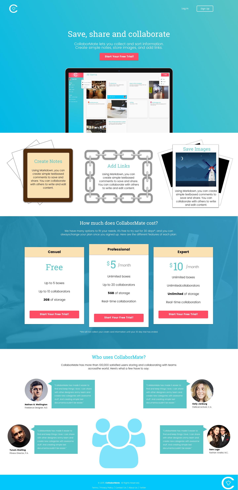Final Draft of Home Page
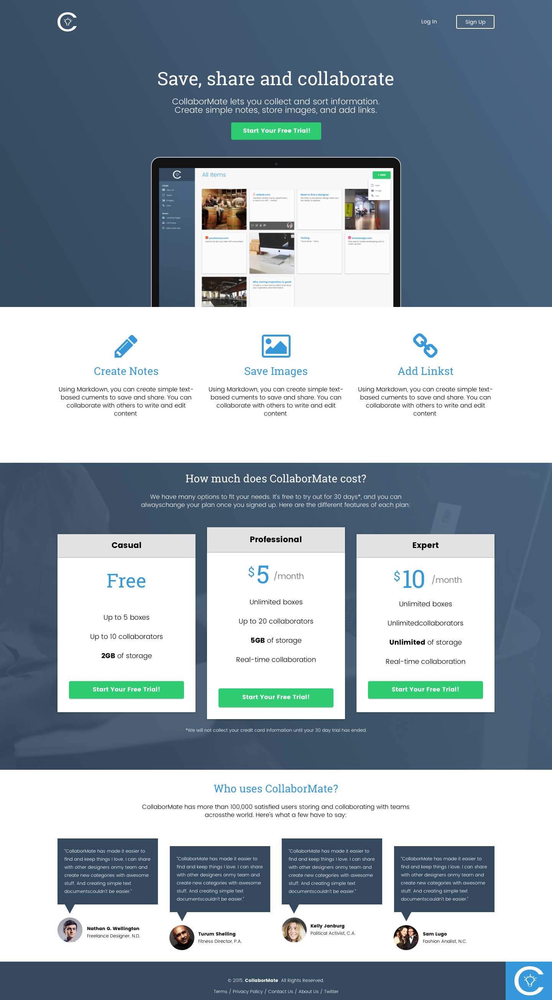Through wireframing, mockups, and user feedback, I discovered where to best position my call-to-action buttons. Moreover, I smoothed out the site's hierarchy. If everything looks important nothing looks important. As a result I learned how to properly position my content to attract the eye and give the user a focal point to begin to digest the information.
User Feedback of Feature Section: Visuals Too Distracting
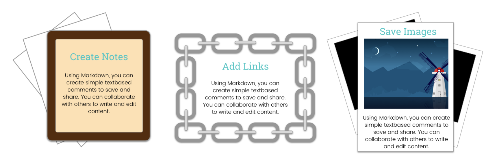2nd Draft of Feature Section

Balsamiq Mockup of Price Chart
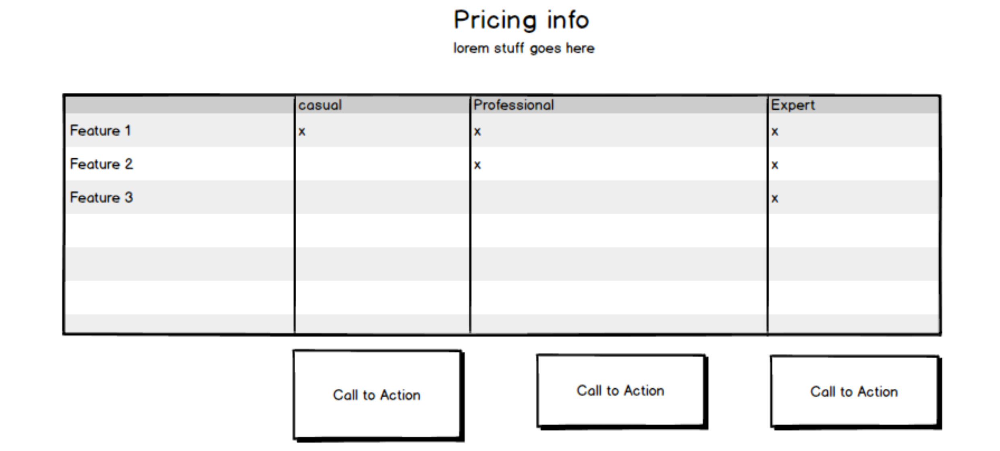High Fidelity Mockup of Price Chart After Feedback
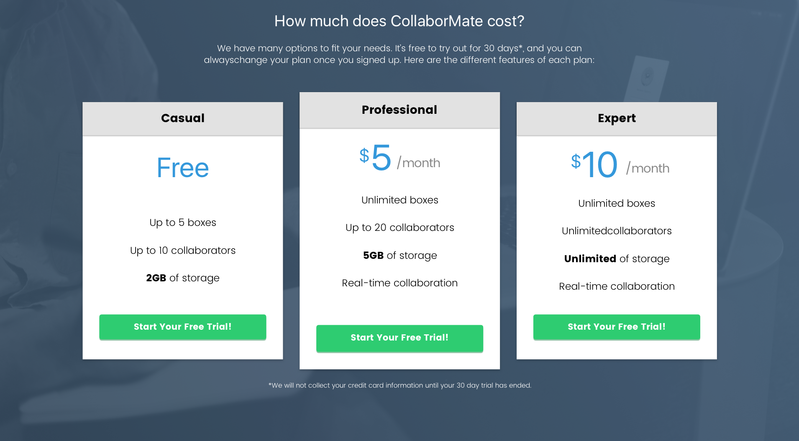What worked? I designed a functional static site and achieved the goal of developing a project from start to finish. Doing UX helped me to make improved mockups and branding each iteration.
What didn't work? I learned that sticking to simple guidelines created a generic website that wasn’t as compelling as I would have liked.
Any surprises? User feedback is more valuable that I anticipated. It identified not only different areas of opportunity but also areas of natural talent.
Learning lessons: I went from being unfamiliar with both the programs and processes of design to becoming acquainted with programs such as AI, PS, and Sketch. I learned about hierarchy, color palettes, typography, personas, user stories and all the other wonderful aspects that come into play in UX/UI. This provided a platform for me to increase my expertise.